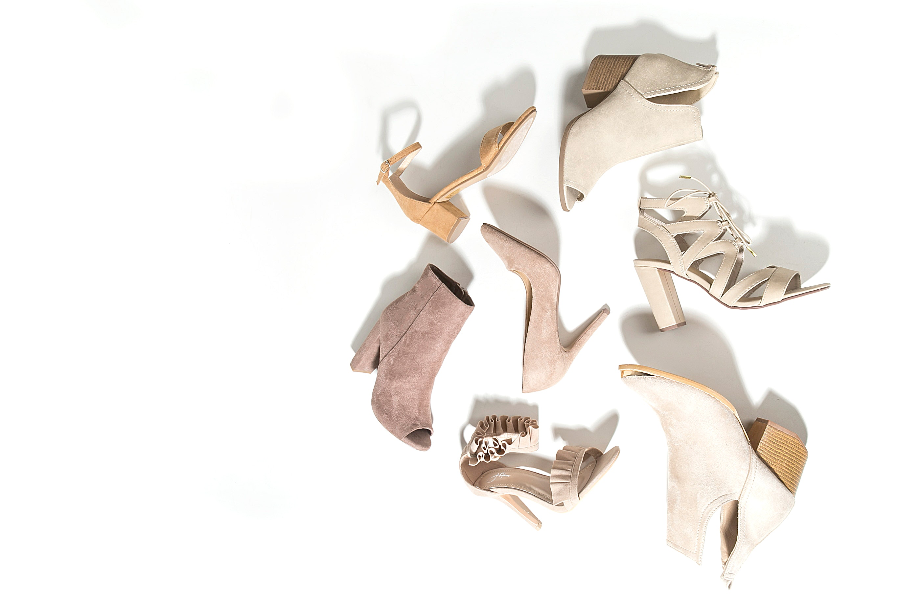

Como o pr√≥ximo texto do assunto ‚Äútransi√ß√£o‚Äù vai ser bastante emocional, essa semana vou falar de um assunto mais leve, que √© uma situa√ß√£o trivial para meninas cis (cis = oposto de trans), mas que algumas meninas trans enfrentam no seu dia-a-dia üôãü誂Äç‚ôÄÔ∏è

Algumas meninas trans t√™m a sorte de cal√ßarem na faixa dos 30 e pouco. Eu n√£o sou uma delas‚Ķ Estou na faixa dos 40 e pouco! üôÑ
Algumas marcas hoje em dia at√© chegam a numera√ß√£o 40, as vezes 41‚Ķ Mas nem assim a pessoa aqui tem vez üôÜü誂Äç‚ôÄÔ∏è
Comecei procurando pelas marcas tradicionais mais conhecidas de “calçados de numeração especial”. Porém normalmente possuem coleções horrorosas… Parece que o público alvo é da quarta idade pra cima…
Mas tudo bem, a internet é vasta e estamos em 2018… Consegui achar alguns sites com calçados mais pra minha faixa etária (sapatilhas, sandálias, escarpins…).
Odete Lis - é o meu preferido! Super variado, com coleções sazonais, o mais próximo de um “site normal” de calçados;
Sapato Show - um dos primeiros que encontrei. Tem ótima variedade também;
Domínio da Moda - não varia tanto. Tem que passar mais tempo buscando algo bonito;
Uma tarefa simples, como ir na esquina comprar uma sapatilha para complementar um look, para mim, tem que ser planejada com quase um mês de antecedência.
Mas eu at√© gosto, sabe‚Ķ Se eu cal√ßasse na faixa dos 30 e pouco tenho certeza absoluta de que n√£o seria poss√≠vel ver o ch√£o do meu apartamento de tanta caixa de sapato üòÇ Acabo adotando uma postura mais minimalista üòä Prefiro ‚ù§Ô∏è
= M =